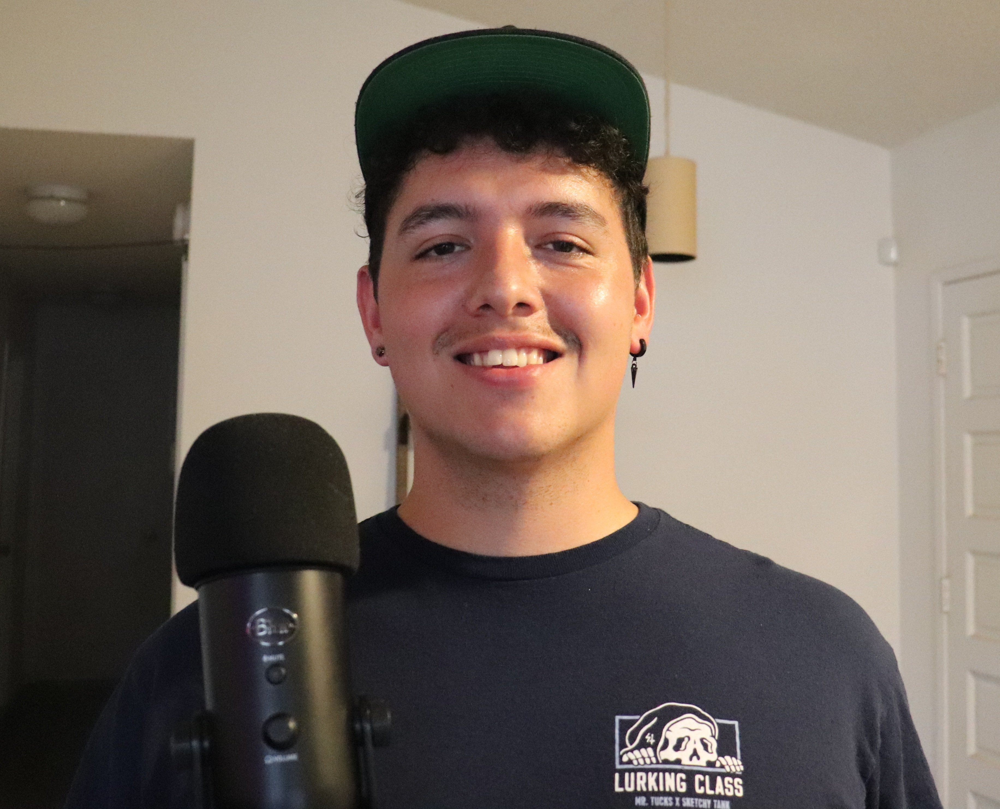

Patrick Colón
Backend Developer

SKILLS
- Python
- Jupyter Notebook
- Excel, CSV, JSON
- Machine Learning
- Data Science
- HTML, CSS
INTERESTS
- Driving
- Working on cars
- Gaming
- Surfing
- Reading
EDUCATION
AA CHINESE LANGUAGE | DEFENSE LANGUAGE INSTITUTE
2019 (Presidio of Monterey, CA)
Graduated with Honors in a high-speed class which had a 50% pass rate.
Extracurricular activities included volunteering at local Veteran Support Center,
local youth events, and supporting the Sea Otter Classic entry services for 80k attendees.
AAS INTELLIGENCE STUDIES AND TECHNOLOGY | CCAF
2021 (Montgomery, AL)
Graduated online through the Community College of the Air Force
while working full time.